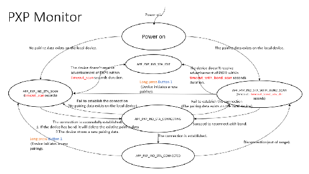

5.2.4 BLE Proximity Monitor
This section explains configuration, programming, and validation of a BLE Proximity Monitor utilizing the PIC32-BZ6 Curiosity board, and also outlines the necessary hardware and software requirements, the BLE Proximity profile, and specific services involved. Additionally, it also includes step-by-step instructions and test cases to facilitate the implementation and verification of the application.
Hardware Requirement
| S. No. |
Tool |
Quantity |
|---|---|---|
| 1 |
PIC32-BZ6 Curiosity Board |
2 |
| 2 |
Micro USB Cable |
2 |
| 3 |
Laptop |
1 |
Software Requirements
- MPLAB X IPE: For programming the precompiled hex file.
- MPLAB X IDE: For programming the application example.
Programming the Precompiled Hex File or Application Example
Using MPLAB® X IPE:
- Import and program the
precompiled hex file:
<Harmony Content Path>\wireless_apps_pic32_bz6\apps\ble\advanced_applications\ ble_pxpm_app\precompiled_hex. - For detailed steps, refer to
Programming a Device in MPLAB® IPE in
Reference Documentation from Related Links.Note: Ensure to choose the correct Device and Tool information.
Using MPLAB® X IDE:
-
Perform the following the steps mentioned in Running a Precompiled Example. For more information, refer to Running a Precompiled Application Example from Related Links.
- Open and program the application
example
ble_pxpm_app.Xlocated in<Harmony Content Path>\wireless_apps_pic32_bz6\apps\ble\advanced_applications\ble_pxpm_app\firmware\ ble_pxpm_app.X. - For more details on how to find the Harmony Content Path, refer to Installing the MCC Plugin from Related Links.
Proximity Profile
In the context of Bluetooth Low Energy (BLE), “proximity” generally refers to the physical closeness between two BLE devices. The BLE Proximity profile is a standardized BLE profile that enables a device to alert a user when another device is near or far away from it.
The Proximity profile defines the behavior when a device moves beyond the range of a peer device, resulting in either a disconnection or an increase in path loss exceeding the preset level, causing an immediate alert. This alert is used to notify the user that the devices have disconnected. As a consequence of this alert, a device may take further action.
- Proximity Reporter (Server): This refers to the tracked device, which could be an item like a key fob or any other asset whose proximity is to be monitored
- Proximity Monitor (Client): This device monitors the reporter's proximity, typically through a smart phone or tablet
The Proximity profile uses the Received Signal Strength Indicator (RSSI) to determine the approximate distance between the Monitor and the Reporter.
Role/Service Relationships

Proximity Monitor Requirements
The Proximity Monitor is designed to observe, connect, read, and configure a Proximity Reporter. Following are the detailed requirements and procedures for effective operation:
Service Discovery
The Proximity Monitor must perform service discovery to identify and connect to the following services by their respective UUIDs:
- Link Loss Service: Identified by the “Link Loss” service UUID.
- Immediate Alert Service: Identified by the “Immediate Alert” service UUID.
- TX Power Service: Identified by the “TX Power” service UUID.
- Discovery and
Configuration:
- Upon discovering the Link Loss Service and its alert level characteristic, the Proximity Monitor will write the alert level characteristic to the required link loss alert level. This action is performed once the connection between the Proximity Monitor and the Proximity Reporter is established.
- The required alert level can be set by the user of the Proximity Monitor.
- Connection
Monitoring:
- The Proximity Monitor can maintain an active connection with the Proximity Reporter and continuously monitor the RSSI of this connection.
- If the connection is disconnected, the Proximity Reporter will alert at the level specified in the alert level characteristic, as defined by the Link Loss Service specification.
- Discovery and
Reading:
- Upon discovering the Immediate Alert and TX Power Services, the Proximity Monitor can read the TX power level characteristic of the TX power service.
- This action is performed once the connection between the Proximity Monitor and the Proximity Reporter is established.
- Connection and Path Loss
Monitoring:
- The Proximity Monitor can maintain an active connection with the Proximity Reporter and continuously monitor the RSSI of this connection.
- The Proximity Monitor can calculate the path loss by subtracting the RSSI from the transmit power level of the Proximity Reporter, as determined by reading TX power procedure.
- If the path loss exceeds a threshold set on the Proximity Monitor, it can write to the alert level characteristic of the Immediate Alert Service using the GATT Write without Response sub-procedure. This action will cause the Proximity Reporter to alert.
Summary
The Proximity Monitor ensures continuous monitoring and configuration of the Proximity Reporter by:
- Discovering essential services and characteristics.
- Writing and setting alert levels as required.
- Monitoring the connection status and RSSI.
- Calculating path loss and triggering alerts based on predefined thresholds.
These procedures ensure that the Proximity Monitor effectively manages the Proximity Reporter, providing timely alerts and maintaining robust connectivity.
Proximity Monitor Application
In this section, the focus is on the Proximity Monitor application implementation specific details. In terms of the application design and testing methods.
Working Flow
APP_PXP_IND_STA_IDLE: application remains in the Idle mode.APP_PXP_IND_STA_CONNECTED: application is prepared to transmit commands to the Proximity Reporter role.APP_PXP_IND_STA_WITH_BOND_SCAN: application is prepared to reconnect with bond within timeout_with_bond_scan seconds duration.APP_PXP_IND_STA_SCAN: application is prepared to initiate the connection within timeout_scan seconds duration.

Input and Output Interface
Input
The application relies on USR BTN1 as the input.
- Types of Pressing:
- Press: Pressing the button for less than 500 ms.
- Long press: Pressing the button for more than 500 ms.
- Application behavior on button press in different state co relation.
| State | Action | Behavior |
|---|---|---|
|
|
Long press USR BTN2 |
Connect to a new device |
|
|
Long press USR BTN2 |
Disconnect the existing connection and connect to a new device |
|
|
Long press USR BTN2 |
Start a new pairing |
Output
- Current application State.
- Alert state.
|
APP Connection State |
LED Behavior |
|---|---|
APP_PXPR_STATE_IDLE |
All LEDs are turned OFF. |
APP_PXP_IND_STA_CONNECTED |
Green LED flashes twice every 1.5 seconds. (ON: 50 ms, OFF: 150 ms). |
|
|
Green LED flashes twice every 3 seconds. (ON: 50 ms, OFF: 50 ms). |
|
|
Green LED flashes once every 3 seconds. (ON: 50 ms, OFF: 2950 ms). |
Immediate Alert level will be issued according to the following table.
|
Distance |
10 cm |
3m |
30m |
|---|---|---|---|
|
Path loss |
51 |
65 |
85 |
|
Zone |
LOW_ZONE |
MIDDLE_ZONE |
HIGH_ZONE |
|
APP Alert Level |
LED Behavior |
|---|---|
|
|
Green LED remains ON for 5 seconds. |
|
|
Green LED blinks once every second continuously for 5 seconds. |
|
|
Green LED blinks five times every second continuously for 5 seconds. |
Test Cases
The test case section covers separate test scenarios to test the Link Loss and Immediate Alert Services behavior implementation.
- Windows system.
- Two PIC32-BZ6 Curiosity boards both connected to Windows machine using a USB cable. One PIC32-BZ6 Curiosity board will act as Proximity Monitor and other PIC32-BZ6 Curiosity boards will act as Proximity Reporter.
- MPLAB X IDE.
Link Loss and Immediate Alert Test
The following section covers the test case scenarios that showcase the Link Loss service and Immediate Alert service usage.
The Link Loss Service test case covers demonstration of HIGH (Preset) alert level set at Proximity Monitor using the Alert Level characteristic to cause an alert in the device when the link is lost. The alert will be displayed on the Proximity Reporter on the event of disconnection.
The Immediate Alert Service test case covers demonstration of alert indication display on Proximity Reporter (Curiosity board) based on the distance between the Proximity Monitor (Curiosity board) and Proximity Reporter (Curiosity board).
The test case covers:
- Establishing connection between Proximity Reporter and Proximity Monitor devices
- Observing Link loss alert (HIGH) on Proximity Reporter
- Observing Immediate Alert Levels on Proximity Reporter based on the distance between Proximity Reporter and Monitor via Green LED pattern.
- Auto re-connection of Proximity Reporter and Proximity Monitor during the long range disconnection and forced removal of Proximity Monitor.
Application Demonstration
- In MPLAB X IDE, open
ble_pxpr_app(Reporter) application, ensure that theBLE_PXPR_IAS_AUTH_ENABLEandBLE_PXPR_LLS_AUTH_ENABLEoptions are enabled. The corresponding macros are distinctly defined in theble_lls.candble_ias.c. Compile and program the PXPR application on the Curiosity board A with the below configuration.Note: The Proximity Reporter application will be referred as Board A in this section.PIC32CX-BZ6_DFP
1.0.2
XC32 Compiler Version:
V4.45
-
After programming (or resetting), the Proximity Reporter application will be in
APP_PXPR_STATE_ADVstate. APP_PXPR_STATE_ADV: The application is waiting for a connection without bond. Duration withintimeout_adv_seconds(60 seconds). After the completion of the timeout the device entersAPP_PXPR_STATE_IDLEstate.Note:timeout_adv= 60 seconds - Timeout for advertisement without bondLED Behavior:
APP_PXPR_STATE_ADV: Green LED flashes once in every 3 secondsAPP_PXPR_STATE_IDLE: Green LED will turn OFF
-
-
In the MPLAB, compile and program the PXPM (Monitor) application on the Curiosity board B with the configuration below.
PIC32CX-BZ6_DFP
1.0.2
XC32 Compiler Version:
V4.45
Note: “PXPM” is used instead in the following section. The Proximity Monitor application will be referred as Board B in this section. -
PXPM (Board B) enters
APP_PXPR_STATE_SCANand establish a connection with PXPR (Board A) after receiving the advertising. -
The PXPM (Board B) enters
APP_PXP_IND_STA_CONNECTEDwhen the connection is established. -
On the PXPM (Board B) , the Link Loss Service will be issued with
BLE_PXPR_ALERT_LEVEL_HIGHand trigger the pairing flow. -
When the PXPR (Board A) is within 10 cm of the PXPM (Board B), the
BLE_PXPR_ALERT_LEVEL_NOalert level can be observed through PXPR (Board A) Green LED. -
PXPR (Board A) moves away from PXPM (board B) over 3m, the
BLE_PXPR_ALERT_LEVEL_MILDalert level can be observed through PXPR (Board A) Green LED. -
PXPR (Board A) moves away from PXPM (Board B) over 30m, the
BLE_PXPR_ALERT_LEVEL_HIGHalert level can be observed through the PXPR (Board A) Green LED. -
Range and Re-connect Test:
- Move PXPR (Board A) far away from the PXPM (Board B) curiosity
board to disconnect.
The PXPM (Board B) will enter
APP_PXP_IND_STA_WITH_BOND_SCANand scan for re-bonding. - Reset the both PXPM (Board B) and PXPR (board A).
- Move PXPR (Board A) close back to the PXPM (Board B).
- The PXPR (Board A) having pairing data will automatically reconnect to the PXPM (Board B).
- The PXPM (Board
B) will enter
APP_PXP_IND_STA_CONNECTEDwhen reconnection is successful.
- Move PXPR (Board A) far away from the PXPM (Board B) curiosity
board to disconnect.
-
Disconnect Re-connect Test:
- Unplug the Proximity Monitor (Board B)
- The PXPM (Board B)
enters
APP_PXP_IND_STA_WITH_BOND_SCANstate. - The alert level set in step 5 of the Link Loss Service will be
displayed as
BLE_PXPR_ALERT_LEVEL_HIGHand can be observed through the PXPR Reporter (Board A)Green LED. Green LED blinks five times every second continuously for 5 seconds. - Plug the Proximity Monitor (Board B) back to power. the PXPM
(Board B) will be reconnected to the PXPR (Board A) and will
enter
APP_PXP_IND_STA_CONNECTEDand the Green LED alert situation will be re-indicated as the corresponding alert level.